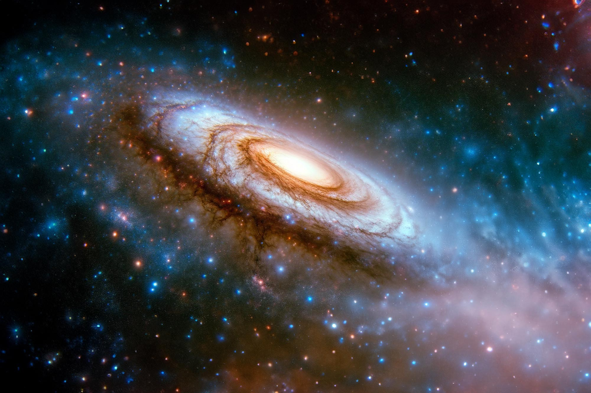

Que tipos de galáxia existem?
Os astrônomos classificam as galáxias em três categorias principais: elípticas, espirais e irregulares. Essas galáxias abrangem uma ampla gama de tamanhos, desde galáxias anãs contendo apenas 100 milhões de estrelas até galáxias gigantes com mais de um trilhão de estrelas.
Ver Mais